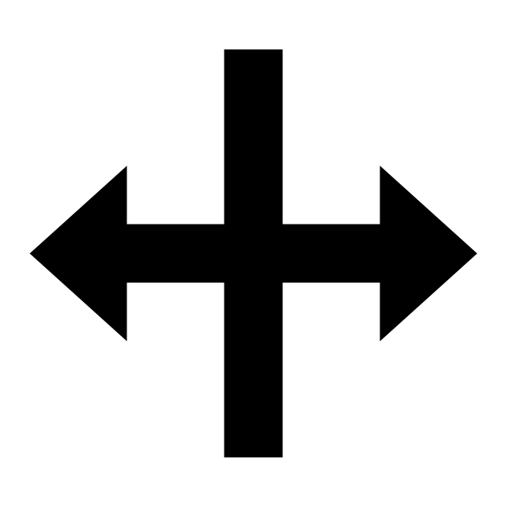

Bevezetés és első lépések
Mi a Speleo Studio?
A Speleo Studio egy modern, webes barlang vizualizációs és felmérés kezelő alkalmazás, amely lehetővé teszi barlangrendszerek 3D-s megjelenítését, szerkesztését és elemzését telepítés nélkül. Az alkalmazás különösen hasznos barlangkutatók, barlangokkal foglalkozó szakemberek számára és mindenkinek, aki érdeklődik a barlangok iránt.
Főbb funkciók:
- 3D vizualizáció: Interaktív 3D barlangrendszerek megjelenítése
- Adatimportálás: Több formátum támogatása (TopoDroid, Polygon, JSON, PLY)
- Felmérés szerkesztés: Felmérési adatok szerkesztése és validálása
- Attribútumok:Kiegészíétő információk rendelése pontokhoz vagy szakaszokhoz
- Segédeszközök: Dőlés-irány számító, legrövidebb út keresés és még több segédeszköz
- Exportálás: Különböző formátumokba exportálás (PNG, DXF, JSON)
- Projekt kezelés: Több barlang és felmérés szervezése projektekben
- Validálás: Adatok széleskörű ellenőrzése a felmérési adatok helyességének ellenőrzéséhez
Rendszerkövetelmények
Minimális követelmények:
- Firefox vagy Chrome böngésző (más böngésző nem támogatott)
- Internetkapcsolat az első betöltéshez
⚠️ Böngésző támogatás
- A Firefox és Chrome böngészőket támogatjuk, más böngészők nem támogatottak.
Alkalmazás elindítása
1. lépés: Alkalmazás megnyitása
Nyissa meg a webböngészőjét és navigáljon a Speleo Studio weboldalára. Az alkalmazás automatikusan betöltődik. Első indításkor megjelenik az üdvözlő panel, amely bemutatja az alkalmazás főbb funkcióit. Kattintson a "Kezdjük el" gombra a folytatáshoz.
2. lépés: Nyelv kiválasztása
Ha angolul jelent meg az üdvözlő panel és Ön a Speleo Studio-t magyarul szeretné használni, akkor kattintson a nyelv választó gombra a navigációs sáv ikonjaitól jobbra és válassza a magyar nyelvet. A Speleo Studio angolul és magyarul érhető el. A Speleo Studio magyar és angol nyelven érhető el jelenleg.
3. lépés: Projekt létrehozása
Az alkalmazás automatikusan megnyitja a projekt kezelő panelt, ahol új projektet hozhat létre vagy meglévőt nyithat meg. Projekt nélkül nem lehet barlangokat importálni és azokat szerkeszteni és bizonyos funkciók nem elérhetőek. A projekt kezelő bezárásával a Speleo Studio kezelői felülete válik láthatóvá.
Felület áttekintése
Főbb területek
1. Navigációs sáv (felső) - piros keret
A navigációs sáv tartalmazza a főbb menüket és ikonokat:
- Fájl menü: Új barlang létrehozása, barlangok és modellek megnyitása, exportálás. Ha nincs aktív projekt kiválasztva, akkor nem használható ez a menü.
- Projekt menü: Projekt kezelés
- Eszközök menü: Speciális eszközök (pl. legrövidebb út két pont között)
- Ikonok: Például Nagyítás, nézetek, vonal szín választó, stb. A 3D és vizualizációs fejezetben részletesen ismerteti az egyes ikonok funkcióit.
2. 3D nézetablak (középső terület) - narancssárga keret
Ez az a 3 dimenziós viurtális tér, ahol a barlangok megjelennek 3D-ben. Itt navigálhat a jelenetben, kiválaszthat pontokat és használhatja a vizualizációs eszközöket. Egy későbbi fejezet részletesen ismerteti a funkciókat.
3. Lábléc (alsó) - lila keret
Itt látható a jelenlegi projekt információja és a felhasználó számára érdekes üzenetek.
4. Oldalsáv (jobb vagy bal oldal) - zöld keret
Az oldalsáv két fő fület tartalmaz:
- Felfedező panel: Barlangok és felmérések listája
- Beállítások panel: Megjelenítési beállítások
Az oldalsáv alján találja a 3D jelenet áttekintőt, ami kicsiben mutatja a 3D jelenetet.
Az oldalsáv tetején az ábrán piros kerettel mutatott oldalra mutató nyíllal az oldalsáv mérete minimalizálható, majd újra a nyílra kattintva visszaállítható. Ha szeretnénk maximalizálni a 3D nézetablak méretét, akkor érdemes minimalizálni az olalsávot.
Az oldalsás szélessége tetszőleges méretűre állítható az oldalsáv szélére kattinva (lila vonal az ábrán) az egeret lenyomva tartva és azt húzva a szélesság változik. Csak akkor nyomjuk le az egeret a szélesség álításához, ha az egerünk megváltozik átméretező ikonra () és az oldalsáv széle zöld színűvé válik.
Felfedező panel
A felfedező panel listázzza a megnyitott barlangokat és modelleket és lehetővé teszi műveletek elvégzését barlangokon és felméréseken (pl. adatlap szerkesztése)
A felfedező panelen a barlang neve melletti háromszögre kattintva a barlang lenyílik és megjelennek alatta a felmérések. A háromszögre újra kattintva a lista záródik, újra csak a barlang neve látható. A barlang neve után következő szem (👁) ikon a barlang láthatóságát változtatja. A felmérések láthatósága szintén a nevük után következő szem (👁) ikon segítségével változik.
A felfedező panel tetején lévő kereső a barlangok és felmérések szűrésére szolgál (zöld keret az ábrán). Ha a kereső mező bal szélén a barlang mód van kiválasztva (lila omega az ábrán), a keresés a barlangok és felmérések neve alapján szűri a listát. Ha a tőle jobbra lévő pont kereső ikora kattintunk, akkor a felmérések mérési adatainak egyezése alapján szűri a listát. Magyarán ha egy felmérésben "mellekag-1" es "mellekag-2" nevű mérés van, akkor a kereső mezőbe "mellegag"-at írva az adott felmérés biztosan megjelenik. Ez a funkció akkor hasznos, ha tudjuk egy mérési pont nevét, de nem tudjuk melyik felmérésben szerepel, viszont szeretnénk szerkeszteni az adatait (hossz, irány, ...)
Az oldalság alján a 3D jelenet áttekintő mutatja a 3D jelenetet kicsiben. Az áttekintő mérete minimalizálható vagy a Ctrl+G billentyűvel vagy a fejlécében lévő kis lefele mutató háromszögre kattintva.
A balang vagy felfedezés nevére kattinva megjelenik egy ikonsáv, amely a barlang vagy felfedezés szerkesztését, tulajdonságainak változtatását és törlését teszi lehetővé.
Barlang esetén az ikonok a következők:
- 🔠 Adatlap: Adatlap szerkesztése
- ❇️ Új felmérés: Új felmérés létrehozása
 Importálás:
TopoDroid felmérés importálása
Importálás:
TopoDroid felmérés importálása- 📍 Pont attribútumok: Pont attribútumok szerkesztése
- 🔀 Szakasz attribútumok: Szakasz attribútumok szerkesztése
- 🧩 Komponens attribútumok: Komponens attribútumok szerkesztése
- 🔄 Hurkok: Hurkok keresése, megjelnítése és hibák eliminálása
- 🎨 Szín Barlang színének változtatása
- 🎨 Szín Barlang színének törlése
- 🗑️ Törlés: Barlang törlése
Felmérés nevére kattinva megjelenik a felmérés ikonsávja, amely a következő funkciókat teszi lehetővé:
- 📝 Mérések: Mérések szerkesztése
- 🔠 Adatlap: Adatlap szerkesztése
- 🎨 Szín Felmérés színének változtatása
- 🎨 Felmérés színének törlése Felmérés színének törlése
- 🗑️ Törlés: Felmérés törlése
Alapvető navigáció
Egér vezérlés
- Bal egérgomb + húzás: Kamera forgatása
- Jobb egérgomb + húzás (vagy Ctrl + bal egérgomb): Kamera eltolása
- Görgő: Nagyítás/kicsinyítés
- Középső gomb + húzás: Kamera eltolása
Legfontosabb gyorsbillentyűk
- Ctrl + B: Oldalsáv ki/bekapcsolása
- Ctrl + E: Felfedező lap megnyitása
- Ctrl + D: Beállítások lap megnyitása
- Ctrl + G: Jelenet áttekintő ki/bekapcsolása
- Ctrl + N: Új barlang
- Ctrl + O: Barlang megnyitása
- Ctrl + H: Exportálás
- Ctrl + P: Nyomtatás
- Ctrl + +: Nagyítás
- Ctrl + -: Kicsinyítés
- Ctrl + 1: Alaprajz nézet
- Ctrl + 2: Oldal nézet
- Ctrl + 3: 3D nézet
- Ctrl + R: Forgatás eszköz
Első lépések
1. Új projekt létrehozása
Ha a projekt kezelőt nem zárta be, akkor kattintson az "Új projekt" gombra a projekt kezelő panelen. Ha a kezelőt bezárta, akkor kattintson a "Projekt" menüre, majd "Új projekt" opcióra. Adjon nevet a projektnek és opcionálisan leírást. Javasoljuk egyszerű nevek használatát, amely nem tartalmaz speciális karaktereket.
2. Barlang importálása
Kattintson a "Fájl" menüre, majd "Barlang(ok) megnyitása" opcióra. Válassza ki a megfelelő formátumú fájlt a felnyíló tallózó ablakban a barlang adatainak importálásához.
3. 3D vizualizáció megtekintése
Az importálás után a barlang automatikusan megjelenik a 3D nézetablakban. Használja az egérgombokat a navigáláshoz.
Hol tárolódnak az adatok?
Az importált és szerkesztett adatokat, mint például a barlangok felméréseit, sőt az alkalmazás beállításait a Speleo Studio automatikusan menti, ezáltal próbálja megkönnyíteni a felhasználók számára a használatot. Az adatokat és a változtatásokat a Speleo Studio a böngésző helyi tárólójában tárolja, amelyben az adatok a böngésző bezárása után is megmaradnak. Ez teszi lehetővé, hogy a felhasználók a böngésző bezárása után is folytathassák a munkát, ott, ahol abbahagyták. Tekintve, hogy az adatok egy böngészőhöz tartoznak (valójában az URL-hez) egy másik böngészőben nem tudunk hozzáférni a projektekhez. Tehát ha egy projektet szerkesztünk Firefoxban, a Chrome-ban nem fogjuk látni a változtatásokat. Könnyedén áthidalhatjuk ezt a problémát a projektek vagy a beállítások exportálásával egy másik böngészőben pedig importálással.
Egyes böngészők (pl. Safari) az oldalak lokális tárolóit inaktivitás törlik, ezért érdemes bizonyos időközönként exportálni a projekteket és a beállításokat.
⚠️ Fontos megjegyzések
- Az alkalmazás böngészőben fut, nincs szükség telepítésre
- Az adatok a böngésző helyi tárolójában vannak automatikus mentve, nincs szükség külön mentésre
- Ajánlott a projektek exportálása bizonyos időközönként
Következő lépések
Most, hogy megismerte az alkalmazás alapjait, folytathatja a projekt kezelés tanulásával, vagy ha már van barlang adata, ugorjon az adatok importálása fejezethez.